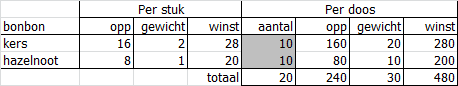

Een bekende bonbonfabrikant wil een assortimentdoos uitbrengen met 2 soorten bonbons
(kersenbonbons en hazelnootbonbons) en daarbij zoveel mogelijk winst behalen. Bekend is
verder:
Een kersenbonbon neemt 16 cm2 ruimte in en een hazelnootbonbon 8
cm2. De bonbons worden door papier van elkaar gescheiden. Minimaal 320
cm2 van de doos moet met bonbons bedekt zijn.
Een kersenbonbon weegt 2 gram en een hazelnootbonbon weegt 1 gram. Uit marktonderzoek is
gebleken dat het ideale gewicht van de inhoud van de doos tussen de 40 gram en 60 gram
moet liggen.
Ook is uit marktonderzoek gebleken dat de doos minstens 35 bonbons moet bevatten waarvan
zeker 10 kersenbonbons.
De winst op een kersenbonbon is 28 eurocent en op een hazelnootbonbon 20 eurocent.
Wat zijn de beslissingsvariabelen?
Wat is de doelfunctie?
Welke restricties zijn er?
Bouw het model in Excel en gebruik de in dit studieboek aangegeven richtlijnen. Een
voorbeeld zie je in de volgende figuur. In de lege cellen moeten nog formules
komen. Beide beslissingsvariabelen hebben hierin als startwaarde 10 gekregen.
Bij dit getal kun je gemakkelijk controleren of de formules de juiste uitkomsten geven.

Voer het model in het dialoogvenster van de Oplosser in en bepaal daarna het optimale
aantal bonbons per doos van elke soort.
Antwoord
Twee beslissingsvariabelen: Aantal kersenbonbons per doos (= K) en Aantal
hazelnootbonbons per doos (= H).
Doelfunctie is de maximale winst op een doos (= W): W = 0,28*K +
0,20*H
Restricties:
Aantal kersenbonbons per doos: K >= 10
Totaal aantal bonbons per doos: K + H >= 35
Gewicht doos: 2*K + 1*H >= 40
Gewicht doos: 2*K +1*H <= 60
Oppervlakte bonbons: 16*K + 8*H >= 320
Aantal bonbons is een geheel getal: K = integer , H = integer
Aantal bonbons is een positief getal: K >= 0 , H >= 0
Optimale inhoud doos: aantal kersenbonbons = 10, aantal hazelnootbonbons = 40. De winst per
doos is dan € 10,80 en aan alle restricties wordt voldaan.